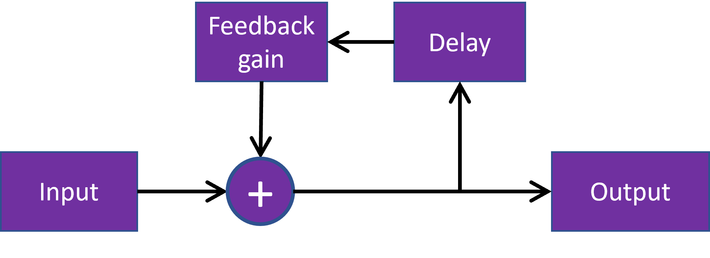

Delay starts to produce interesting sounds when the output of a delay is routed back to the input.
Here, we implement a basic delay with feedback. The source is a short burst of a 2kHz tone.

Try playing around with the feedback delay below.
Set the gain to a high value, so that it will take a long time for the output to decay.
Now move the delay to a low value. You should start to hear a new, buzzy pitched component emerge.
This new frequency has an associated period given by one over the delay.
As we shall see, this is important in developing and controlling the digital waveguides.
Gain
Delay (ms)
This model can be represented by a difference equation, which gives the output y at sample n as a function of previous outputs and current and previous inputs x,